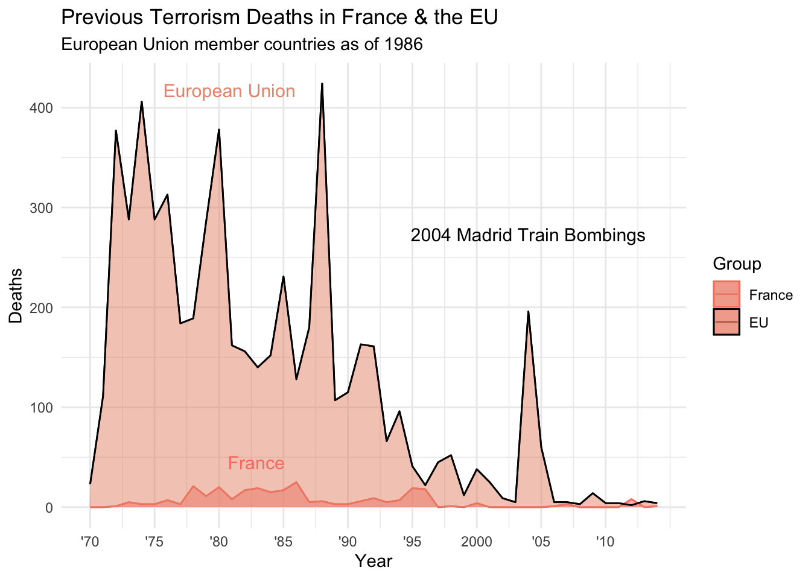

── Conflicts ────────────────────────────────────────── tidyverse_conflicts() ──
✖ readr::col_factor() masks scales::col_factor()
✖ purrr::discard() masks scales::discard()
✖ dplyr::filter() masks stats::filter()
✖ stringr::fixed() masks recipes::fixed()
✖ dplyr::lag() masks stats::lag()
✖ readr::spec() masks yardstick::spec()
ℹ Use the conflicted package (<http://conflicted.r-lib.org/>) to force all conflicts to become errors
library(ggplot2)library(plotly)
Attaching package: 'plotly'
The following object is masked from 'package:ggplot2':
last_plot
The following object is masked from 'package:stats':
filter
The following object is masked from 'package:graphics':
layout
library(knitr)library(kableExtra)
Attaching package: 'kableExtra'
The following object is masked from 'package:dplyr':
group_rows
library(gt)
Background
The data were acquired from Kaggle. Two data sets were included; one containing data on dietary habits of study participants, and the other contains data that spuriously connect demographic characteristics or lifestyle habits to food choices. The latter dataset, titled p_values clearly demonstrates the problem with using p-values to solely dictate statistical significance. For example, the article suggests, with a p-value of 0.0001 that eating potato chips is linked to higher SAT scores on the math section than the verbal section.
For this assignment, my goal is to use AI to replicate the figures and tables from this article. Prompts and code provided by AI (Chat GPT) will be included within the visualization-exercise.qmd document.
food characteristic p_values
Length:27716 Length:27716 Min. :0.0000
Class :character Class :character 1st Qu.:0.2652
Mode :character Mode :character Median :0.4908
Mean :0.4944
3rd Qu.:0.7223
Max. :1.0000
NA's :2470
I have 27,716 observations between 3 variables. The p-values range from 0 to 1. Since we are hoping to recreate the table showing “significance” between foods and various demographic or lifestyle characteristics, I plan to remove any p-values that are greater than 0.05.
Next, I am going to remove all observations that do not have p-values entered.
Now that I have removed all NA values, the dataset contains 25,246 observations. Next, I am going to remove any non-significant p-values from the dataset.
After removing all non-significant p-values from the dataset, we are left with 1,081 observations. This data cleaning will make replication of the table much simpler.
I am now going to filter my dataset to only contain the characteristics listed in the table I am attempting to recreate
I have now cleaned the dataset from 27,716 observations to 670 observations. I should note that there is one potential issue with recreating the table. The table links Energy Drinks and Smoking. Since there are multiple subcategories within smoking (currently_smoke, ever_smoked, smoke_rarely); this row may or may not be included within the table. Luckily, smoking does not have a p-value associated with it within the actual table, so I am hoping I can still recreate it fully.
Now, I am going to further clean the data set to have the food items I need.
I have now created the final dataset. I am now going to provide Chat GPT with the Table from 538 as well as my dataset to recreate the table.
After copying & pasting the Table contents and the contents from my final dataframe, I asked ChatGPT the following prompt: “I want to use an R package to create a publication-level quality table using the table I provided as well as the dataset”. You can find my code and prompts given to ChatGPT in the visualization-exercise.qmd file.
Additionally, though the original table did not provide p-values associated with Egg Rolls, Raw Tomatoes, and Energy Drinks; there were values provided in the actual data. For the sake of reproducibility, I am going to remove those values.
# Create a dataframe with datadf <-data.frame(Eating_or_Drinking =c("Egg rolls", "Soda", "Shellfish", "Lemonade", "Shellfish", "Fried/breaded fish", "Beer", "Table salt", "Coffee", "Energy drinks", "Lemonade", "Steak with fat trimmed", "Iced tea", "Iced tea", "Raw tomatoes", "Cabbage"),Linked_to =c("Dog ownership", "Weird rash in the past year", "Right-handedness", "Belief that 'Crash' deserved to win best picture", "Left-handedness", "Democratic Party affiliation", "Frequent smoking", "Positive relationship with Internet service provider", "Cat ownership", "Frequent smoking", "Frequent smoking", "Lack of belief in a god", "Belief that 'Crash' didn't deserve to win best picture", "Dog ownership", "Judaism", "Innie bellybutton"),P_Value =c(2.84762e-05, 1.77172e-04, 2.03126e-04, 2.40925e-04, 3.52826e-04, 7.35258e-04, 1.28534e-03, 1.40221e-03, 1.63035e-03, 1.88478e-03, 2.61039e-03, 2.96707e-03, 4.26540e-03, 4.58258e-03, 6.28035e-03, 9.68729e-03))# Replace P-Values with blank spaces for specific rowsdf$P_Value[df$Eating_or_Drinking %in%c("Egg rolls", "Energy drinks", "Raw tomatoes")] <-""
Now, I am going to create the table:
# Create a gt tablegt_table4 <- df %>%gt() %>%cols_label(Eating_or_Drinking ="Eating or Drinking",Linked_to ="Is Linked To",P_Value ="P-Value" ) %>%tab_header(title ="Our shocking new study finds that...") %>%fmt_number(columns =c("P_Value"),decimals =4 )# Print the tablegt_table4
Our shocking new study finds that...
Eating or Drinking
Is Linked To
P-Value
Egg rolls
Dog ownership
Soda
Weird rash in the past year
0.000177172
Shellfish
Right-handedness
0.000203126
Lemonade
Belief that 'Crash' deserved to win best picture
0.000240925
Shellfish
Left-handedness
0.000352826
Fried/breaded fish
Democratic Party affiliation
0.000735258
Beer
Frequent smoking
0.00128534
Table salt
Positive relationship with Internet service provider
0.00140221
Coffee
Cat ownership
0.00163035
Energy drinks
Frequent smoking
Lemonade
Frequent smoking
0.00261039
Steak with fat trimmed
Lack of belief in a god
0.00296707
Iced tea
Belief that 'Crash' didn't deserve to win best picture
0.0042654
Iced tea
Dog ownership
0.00458258
Raw tomatoes
Judaism
Cabbage
Innie bellybutton
0.00968729
The visualization-exercise.qmd document contains my interaction with AI for this assignment. Some manual edits were made after ChatGPT gave me the final code. After much troubleshooting, I was unable to reorder the rows as they appear in the 538 article.
Background
Unfortunately, the two figured provided in this 538 article used outside sources where the data were not provided. I am now going to switch gears to another article to recreate another figure. I found a 538 article that discusses terrorism in France versus the European Union.
iyear Belgium Denmark France
Min. :1970 Min. : 0.0000 Min. :0.00000 Min. : 0.000
1st Qu.:1981 1st Qu.: 0.0000 1st Qu.:0.00000 1st Qu.: 0.000
Median :1992 Median : 0.0000 Median :0.00000 Median : 3.000
Mean :1992 Mean : 0.9556 Mean :0.04444 Mean : 6.089
3rd Qu.:2003 3rd Qu.: 1.0000 3rd Qu.:0.00000 3rd Qu.: 8.000
Max. :2014 Max. :10.0000 Max. :1.00000 Max. :25.000
Germany Greece Ireland Italy
Min. : 0.000 Min. : 0.000 Min. : 0.000 Min. : 0.000
1st Qu.: 0.000 1st Qu.: 0.000 1st Qu.: 0.000 1st Qu.: 0.000
Median : 0.000 Median : 1.000 Median : 1.000 Median : 1.000
Mean : 1.822 Mean : 5.711 Mean : 2.578 Mean : 9.356
3rd Qu.: 1.000 3rd Qu.: 4.000 3rd Qu.: 3.000 3rd Qu.: 12.000
Max. :27.000 Max. :92.000 Max. :34.000 Max. :125.000
Luxembourg Netherlands Portugal Spain
Min. :0 Min. :0.0000 Min. :0.0000 Min. : 0.00
1st Qu.:0 1st Qu.:0.0000 1st Qu.:0.0000 1st Qu.: 2.00
Median :0 Median :0.0000 Median :0.0000 Median : 17.00
Mean :0 Mean :0.9111 Mean :0.7111 Mean : 28.56
3rd Qu.:0 3rd Qu.:1.0000 3rd Qu.:1.0000 3rd Qu.: 42.00
Max. :0 Max. :9.0000 Max. :8.0000 Max. :193.00
United.Kingdom
Min. : 0.00
1st Qu.: 4.00
Median : 63.00
Mean : 75.49
3rd Qu.: 95.00
Max. :372.00
Now that I know that each Country column’s value correspondeds to the number of terrorism fatalities, I am going to combine the columns leaving EU vs. France by year.
# Combine columns for FranceFrance <- eu_terrorism_fatalities_by_country$France# Combine columns for the rest of the EUEU <-rowSums(eu_terrorism_fatalities_by_country[, c("Belgium", "Denmark", "Germany", "Greece", "Ireland","Italy", "Luxembourg", "Netherlands", "Portugal", "Spain","United.Kingdom")])combined_data <-data.frame(Year = eu_terrorism_fatalities_by_country$iyear, France = France, EU = EU)# Reshape the data for plottingcombined_data_long <- reshape2::melt(combined_data, id.vars ="Year", variable.name ="Group", value.name ="Deaths")
After interacting with AI (see visualization-exercise document), I am now ready to recreate the graph.
# Calculate the maximum number of deaths and the corresponding year for France and the EUmax_deaths_France <-max(combined_data_long$Deaths[combined_data_long$Group =="France"])year_max_France <- combined_data_long$Year[which.max(combined_data_long$Deaths[combined_data_long$Group =="France"])]max_deaths_EU <-max(combined_data_long$Deaths[combined_data_long$Group =="EU"])year_max_EU <- combined_data_long$Year[which.max(combined_data_long$Deaths[combined_data_long$Group =="EU"])]
# Create a data frame for labelslabel_data <-data.frame(x =c(year_max_France, year_max_EU, 2004),y =c(max_deaths_France, max_deaths_EU, max(max_deaths_France, max_deaths_EU)),label =c("France", "European Union", "2004 Madrid Train Bombings"),Group =c("France", "EU", "Event"))# Plot the line plotggplot(combined_data_long, aes(x = Year, y = Deaths, color = Group, fill = Group)) +geom_line() +geom_area(data =filter(combined_data_long, Group =="France"), alpha =0.5, fill ="salmon") +geom_area(data =filter(combined_data_long, Group =="EU"), alpha =0.5, fill ="dark salmon") +scale_fill_manual(values =c("France"="salmon", "EU"="dark salmon"), guide =FALSE) +scale_color_manual(values =c("France"="salmon", "EU"="black")) +labs(title ="Previous Terrorism Deaths in France & the EU",subtitle ="European Union member countries as of 1986",color ="Group",fill ="Group") +theme_minimal() +scale_x_continuous(breaks =c(1970, 1975, 1980, 1985, 1990, 1995, 2000, 2005, 2010),labels =c("'70", "'75", "'80", "'85", "'90", "'95", 2000, "'05", "'10")) +annotate("text", x = year_max_France, y = max_deaths_France, label ="France", color ="salmon",size =4, hjust =1.2, vjust =-1) +annotate("text", x = year_max_EU, y = max_deaths_EU, label ="European Union", color ="dark salmon",size =4, hjust =1.2, vjust =1) +annotate("text", x =2004, y =max(max_deaths_France, max_deaths_EU),label ="2004 Madrid Train Bombings", color ="black", size =4, hjust =0.5, vjust =12) +guides(fill =FALSE) # Hide the legend for labels
Warning: The `<scale>` argument of `guides()` cannot be `FALSE`. Use "none" instead as
of ggplot2 3.3.4.

While I wasn’t able to get a lot of the aesthetic components to look identical to the 538 article, ChatGPT & I were able to create a similar result!